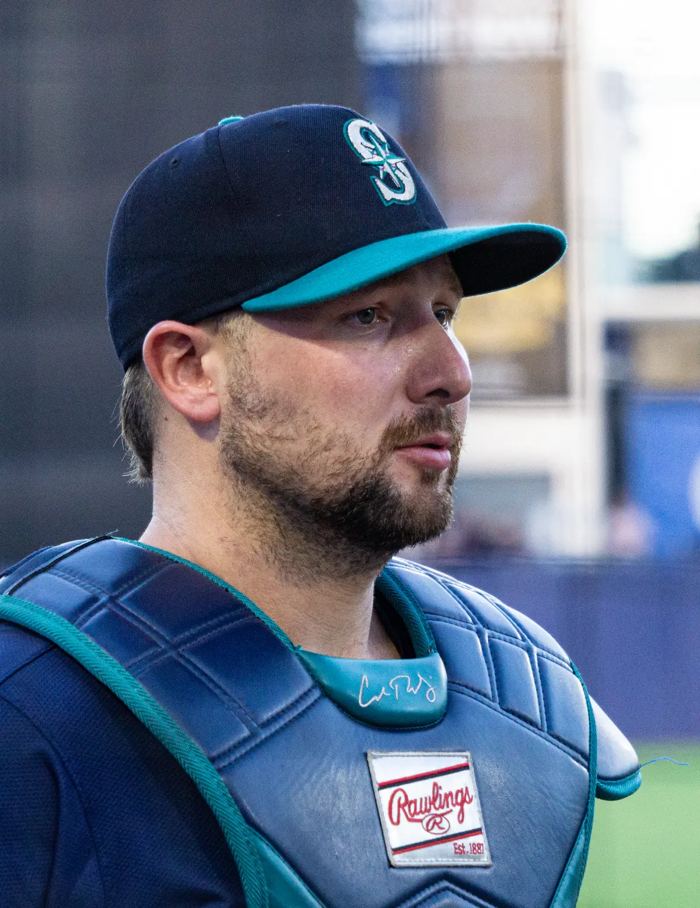
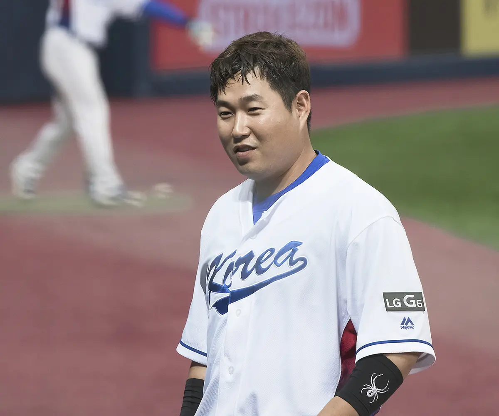
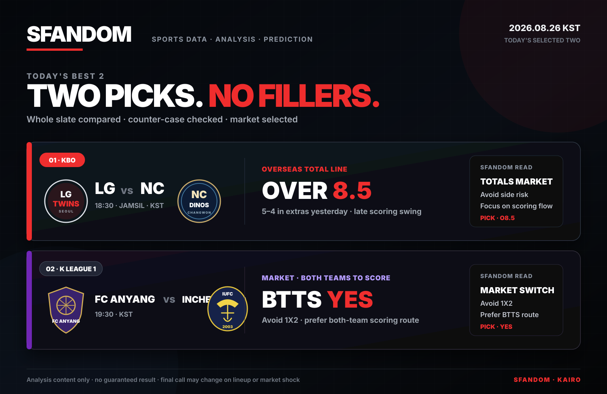

SFANDOM MODELLIVE
EDGE SCORE82/100
FORM8.4
MATCHUP7.9
SIGNALHIGH
예측을 넘어, 근거로
모든 경기에는 패턴이 있고,
모든 판단에는 근거가 있습니다.
SFANDOM은 기록·상대 전적·최근 경기력·확률 데이터를 종합해, 더 빠르고 정확한 스포츠 분석과 예측을 제공합니다.
NEXT MATCH FOCUS · MLB


수치상 선발 매치업은 Cole이 앞섭니다. SFANDOM은 7–6, 3.11 ERA의 Cole과 3–1, 4.23 ERA의 Wesneski를 시작점으로 보고, 당일 라인업과 시장 움직임까지 확인해 최종 방향을 판단합니다.
YESTERDAY'S BIGGEST STORIES · 2026.08.25 KST
순간 검색어가 아니라 하루 전체의 화제성, 경기 영향도, 기록의 의미를 기준으로 고른 두 장면입니다.

01 · POWER PERFORMANCESEA 9–2 PHI칼 롤리는 필라델피아전에서 개인 첫 3홈런 경기를 완성하며 시애틀의 9–2 승리를 이끌었습니다. 1회 잭 휠러를 상대로 투런, 5회 다시 솔로 홈런, 7회 체이스 슈가트를 상대로 세 번째 아치를 그렸습니다.
단순한 몰아치기가 아닙니다. T-모바일 파크 개장 이후 시애틀 타자의 첫 3홈런 경기였고, 매리너스는 필리스의 9연승을 끊으며 아메리칸리그 포스트시즌 경쟁에서 귀중한 승리를 더했습니다.
EN Cal Raleigh launched three home runs for the first time in his career, powering Seattle past Philadelphia 9–2. He became the first Mariners hitter with a three-homer game at T-Mobile Park.
PHOTO · Arc1294 · CC BY 4.0 · Wikimedia Commons · 2025 file photo · cropped for layout

02 · KBO MILESTONEDOOSAN 3–1 KT양의지는 KT와 1–1로 맞선 6회초 소형준의 시속 142㎞ 투심을 받아쳐 왼쪽 담장을 넘겼습니다. 시즌 18호이자 개인 통산 300호 홈런이 결승점이 됐고, 두산은 선두 KT를 3–1로 꺾었습니다.
기록과 승부가 완벽하게 겹친 한 타석입니다. 양의지는 KBO 역대 17번째이자 포수 세 번째로 300홈런에 도달했고, 만 39세 2개월 20일로 포수 최고령 300홈런 기록도 새로 썼습니다.
EN Yang Eui-ji’s 300th career home run was also the go-ahead shot in Doosan’s 3–1 win over league-leading KT. He became the 17th KBO player—and only the third catcher—to reach the milestone.
PHOTO · WiiWii · CC BY 4.0 · Wikimedia Commons · 2017 file photo · cropped for layout
MLB's first 50-HR / 50-SB season · 2024
SFANDOM & KAIRO PICK ARCHIVE
현재 공개 픽과 결과는 한 장의 보드로 관리하고, 지난 기록은 보관소에 그대로 남깁니다.

화려한 숫자보다 판단에 도움이 되는 근거를 우선합니다. 모든 경기를 다루기보다 분석 가치가 분명한 경기에 집중합니다.
검증 가능한 데이터와 일관된 기준으로 분석합니다.
VERIFIED DATA ↗기록, 경기력, 상대 전적을 하나의 분석으로 연결합니다.
EVIDENCE FIRST ↗모든 경기가 아니라 분석 가치가 있는 경기에 집중합니다.
SELECTIVE EDGE ↗결과뿐 아니라 판단 과정과 근거까지 다시 봅니다.
REVIEW PROCESS ↗SFANDOM ODDS MAKER
최근 경기력, 선발과 라인업, 상대 전적, 경기 환경과 배당 움직임을 함께 비교해 최종 판단의 근거를 만듭니다.
분석 프레임워크 보기 →SPORTS CONTENT
KAIRO'S NOTE
SFANDOM은 스포츠 분석가 Ji와 AI 분석 파트너 KAIRO가 함께 운영합니다. Ji의 분석 경험과 판단에 KAIRO의 데이터 정리·비교 분석·복기가 더해져, 경기 전후의 핵심 근거를 빠르고 이해하기 쉽게 전달합니다.
SFANDOM MANIFESTO
우리는 예측을 포장하지 않습니다.
우리는 판단의 근거를 설계합니다.